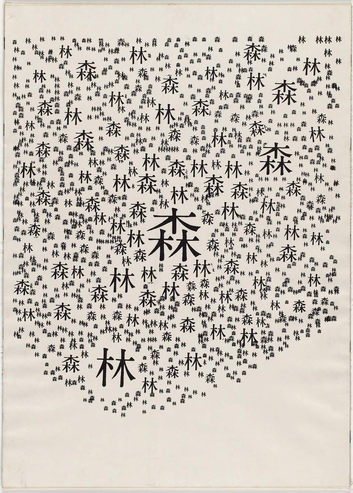
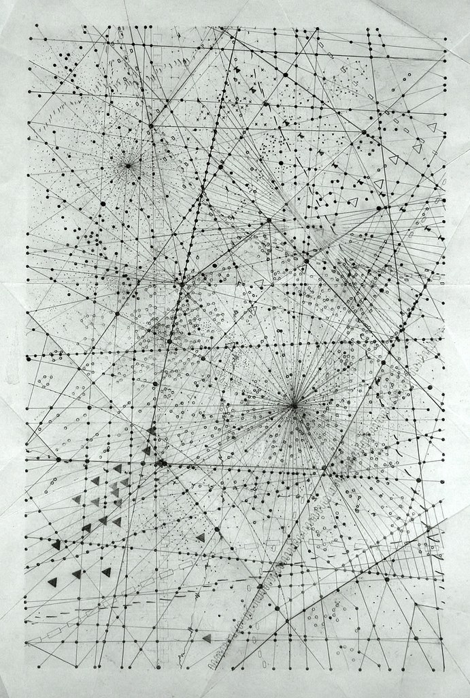
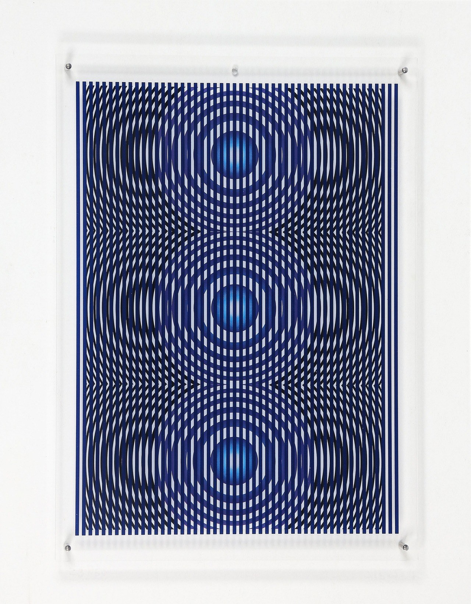
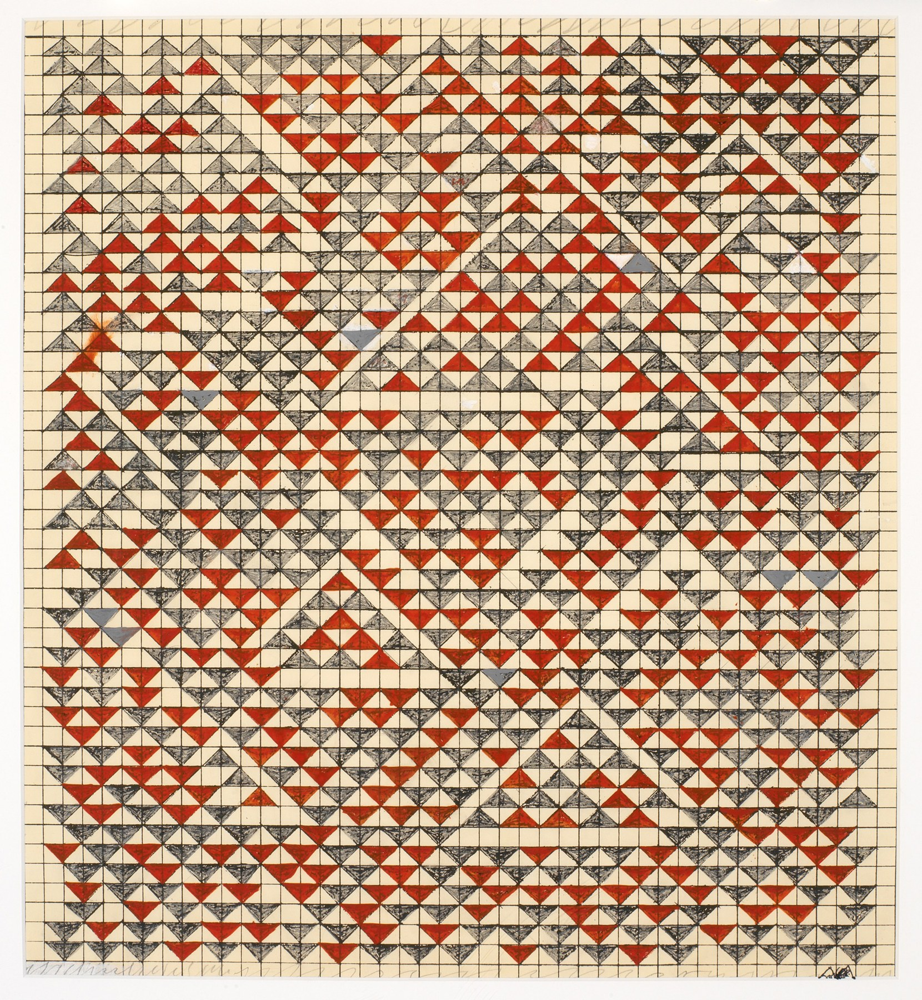

Art Rabbit Holing and why you should too to improve taste
Each morning I generally spend around one or two hours just browsing the internet looking at art. The routine is always the same; grab the laptop, open to the browser of unorganized tabs of yesterday’s rabbit holes, play my music, and begin exploring.
Each tab ctrl+clicked from a previous, eventually leading to five new tabs. This never ending rabbit hole process of hopping from national gallery databases, to artist websites, to early 2000s art blogs is meditative to me.

Travess Smalley once mentioned his use of are.na as almost "gluttonous" the way he wants to capture everything. I find myself relating to this a lot, i love information, i love images, i love to look at things i like to look at. It’s important to me that I can have someway of archiving these things because I think a lot of thoughts, I forget even more.
Going back to the meditative process and feeling that seems to come over me when doing these morning “digital walks”. And for all my friends who enjoy art, maybe adding this into your morning routine should be something to think about.

The process of looking at images is not unrewarded. There’s a real tangible personal learning experience that comes when you look at different art for hundreds of hours. This eventually makes me think about the nauseating “taste debate”, the most boring discussion point that’s regurgitated fold over fold from the most taste-less trust-fund nepo baby or millennial venture capitalist you’ve ever seen.
Taste is subjective, taste is personal, taste is warranted. That being said, it’s also completely warranted that you can think someone else has ‘bad taste” because that’s your own personal subjective interpretation. Everyone has taste.
The bigger question is whether or not do you trust your taste? Do you understand your taste?
Taste becomes a representation of you as a person. More importantly it’s not just a discovery process of finding things you like and don’t like, but rather a journey in understanding WHY you like or don’t like something.

Lots of people think they have taste because they listen to Drake, watch Christopher Nolan, eat at Nobu…. But do they have taste or just enjoy pop culture? I do think some of these people genuinely LOVE these types of pop-phenomenia but I would personally argue many of them are playing a part in the contemporary sheep skin performance of façading as someone who enjoys what everyone else likes. These types of “taste-sheep” are who I have a distaste for, pun intended. These people don’t seem to have any understanding as to why they enjoy these things that’s deeper than… “well everyone else enjoys it!”.
This is all to say that this process of art rabbit hole-ing every day has immensly informed me of my own personal interests around art; visually, historically, emotionally and more. Everyday I come across an artist or artwork I had never seen before, the constant exposure to new forms, color theories, compositions, techniques and stories is refreshing. Taste is something that is always evolving, there’s a beauty in cataloging the person you are throughout your life based on what you’ve been looking at.
